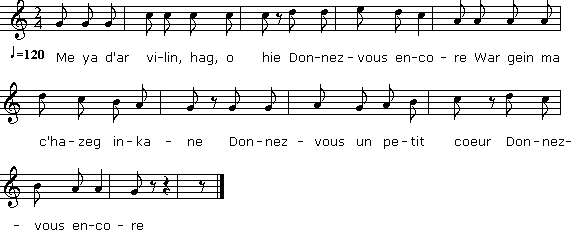

Ar miliner laer
Le meunier voleur
Chant à rapprocher de "La meunière de Pontaro" du "Barzhaz Breizh"
Texte et musique recueillis par le Colonel Alfred Bourgeois
dans la seconde moitié du XIXème siècle.
publiés dans le recueil "Kanaouennoù Pobl".
Reproduits sur le site de M.Quentel
dans la seconde moitié du XIXème siècle.
publiés dans le recueil "Kanaouennoù Pobl".

Mélodie
Arrangement Christian Souchon (c) 2012
Source: le site de M.Quentel, "Son ha ton" (voir "Liens")
|
VERSION BRETONNE AR MILINER LAER Me ya d'ar vilin, hag, o hie Donnez-vous encore War gein ma c'hazeg inkane Donnez-vous un petit coeur Donnez-vous encore Miliner laer, din o laret He c'hwi valfe din-me sac'het Ha c'hwi valfe din-me sac'het Da vonet d'er gêr de boac'het Kemer't ur skabell ha koaniet Gant ar vilin 'vefet dalc'het Emañ ar vilin war he zu Vo kerc'h ha segal hag ed du Dre ma koue'e an ed er gern Ar miliner a starde ferm Dre ma koue'e ar bleud er sac'h Ar miliner a starde 'r plac'h - Aou ie ta ! Miliner savet Las ma davañjer zo torret Las ma davañjer satin gwenn A goust din daou skoed ar walenn - Arc'hant a-walc'h zo er vilin Evit prenañ deoc'h ur satin A-benn ma savjon ac'hane Oe graet un Aelig da Doue Oe graet un Aelig da Doue Pe ur paj bihan d'ar Roue Hag aet eo Alanig d'ar Roc'h Da lakaat brallañ an tri gloc'h Ha gant ur c'houplad krampouezh tomm E oe kanet an Te Deum |
TRADUCTION FRANCAISE LE MEUNIER VOLEUR Au moulin je m'en suis allée, Donnez-vous encore Sur le dos de ma haquenée. Donnez-vous un petit coeur Donnez-vous encore - Voleur de meunier, dites-moi, Voyez-vous le sac que voilà? Moulez-moi ce qu'on a mis là, Après, je rentrerai chez moi! - Prenez un siège pour dîner! Je mets le moulin à tourner. - Et voilà le moulin en train: Avoine, seigle et sarrazin... Le blé tombait par la trémie: Le meunier serrait notre amie. La farine arrivait au port: Le meunier la serrait plus fort. - Allons, relevez-vous, meunier! Mon tablier est déchiré! Mon tablier de satin blanc! Deux écus l'aune, assurément! - Assez d'argent dans ce moulin Pour vous acheter du satin! - Avant de se lever, les deux Avaient fait un ange au Bon Dieu. Un ange au Bon Dieu, ce jour-là, Ou bien un soldat pour le roi. La cloche à la Roche-Derrien Sonne à la demande d'Alain. Tout en mangeant sa crêpe au rhum Chacun chanta le "Te Deum"! Traduction: Christian Souchon (c) 2012 |
ENGLISH TRANSLATION THE MILLER IS A THIEF To the mill I rode on my way Will it give no more? On horseback, on my palfrey. Will your little heart, o say! Will it give no more? - Miller and thief, O miller, hear! Would you still grind all the grain here? Would you grind this sackful of grain? I'll wait. Then I'll go back again. - Now, take a stool and have dinner! I'll set the mill to grind thinner. - And the mill ground the whole supply: All the buckwheat, the oats, the rye As the wheat fell through the hopper: The miller's ways grew improper. As the flour poured into the bag: The stallion was turned to a nag. - Now, miller thief, time to stand up! You have torn my apron, young pup! You tore my white satin apron! An ell of which will cost two crowns! - There's enough money in this mill If you want me to pay the bill! - Before they rose, the two of them Had a new angel begotten. A new angel for God the Lord, Or a soldier to wield a sword. The three bells at Roche-Derrien Rung at the request of Alan. They ate of hot pancakes their fills And sang "Te Deum" in the mills! Translated by Christian Souchon (c) 2012 |
Retour à "Milinerez Pontaro"
Taolenn